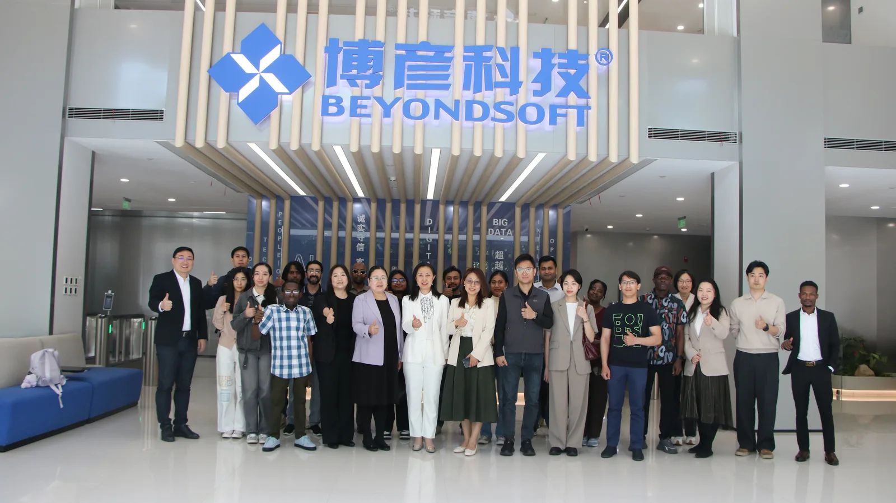
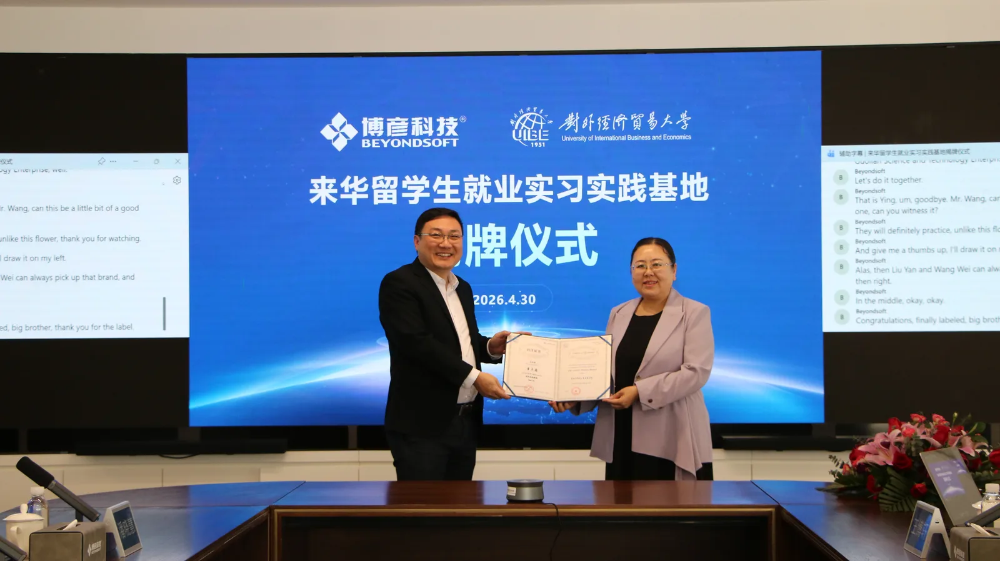
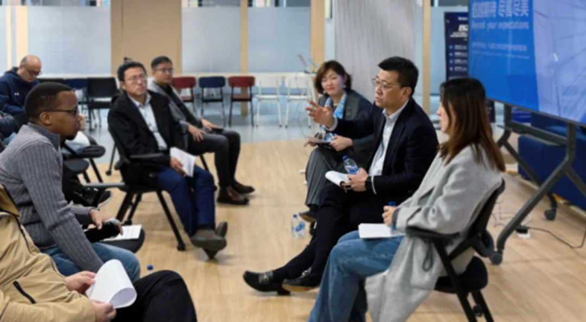
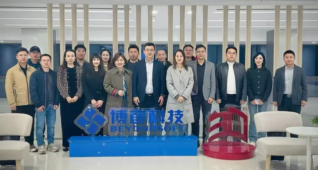

In August 2025, I visited Beyondsoft's Singapore center for the first time.
This was not our first interaction with Beyondsoft, nor would it be our last.
I am recording these moments from the perspective of Bruce Dong, Secretary-General & COO of WTC Singapore, who has been engaged in the ongoing dialogue with Beyondsoft.
Over the past two years, we have maintained a steady dialogue with the company—from an exchange on international expansion at its Singapore center, to another visit to its global headquarters in Beijing, and later, in 2026, a visit to Singapore by Blake Zhang, Chairman of the Board of Directors of WTC Singapore, and Zhu Xiaolan, Chief Representative and CEO of WTC Singapore.
Some companies you meet once, and that is where the conversation ends.
Others lead naturally to a second meeting, and then another.
Beyondsoft has been one of the latter.
What Is Worth Looking at in the Singapore Node?
"I have seen many Chinese companies' regional centers in Singapore; a lot of them are essentially 'sales outposts' — people sent over, but R&D and decision-making still back home. This Singapore center feels different. It is more like they genuinely placed part of the 'innovation' itself in Singapore, not just the selling."
— Bruce Dong, Secretary-General & COO, WTC Singapore

At Beyondsoft's Singapore center, we discussed its local business activities and practices across areas including AI and finance, smart manufacturing, and green energy.
What stood out to me was that the conversation did not remain at the level of broad statements such as "overseas markets are large" or "globalization is a trend."
Instead, the discussion often came down to specific customer needs, solutions, and how those experiences could gradually become part of the company's broader capabilities.
That is something I pay close attention to.
Because once a company truly enters an overseas market, the real challenge is often not simply sending people abroad.
It is:
Can the local market actually become part of the company's capabilities?
In my conversations with many Chinese companies, I have increasingly come to appreciate this distinction.
"Going global" is relatively easy to define.
But truly "going local" means understanding local customers, industries and business environments, and gradually building capabilities within the market.
From this perspective, what I saw at Beyondsoft's Singapore center was not simply an overseas office.
It was an interesting example of:
how a Chinese technology company can gradually turn an overseas city into a meaningful coordinate within its global business system.
Why Does One Exchange Lead to Another?
I have always believed that meaningful business relationships are rarely defined by the first meeting.
My first visit to Beyondsoft's Singapore center was an exchange focused on international expansion.
Later, we visited Beyondsoft's global headquarters in Beijing.
Then, in 2026, Blake Zhang, Chairman of the Board of Directors of WTC Singapore, and Zhu Xiaolan, Chief Representative and CEO of WTC Singapore, visited Singapore, and we met again.
The topics were not exactly the same each time.
But one thread remained consistent:
How can Chinese companies better understand global markets, and how can they take their capabilities into those markets more effectively?
This is also one way WTC Singapore builds relationships with companies.
We do not expect every interaction to immediately become a project.
Sometimes a company visit is simply a company visit.
Sometimes an industry exchange is simply an exchange.
But when both sides feel that there is value in continuing to know each other, the next meeting happens naturally.
Business relationships are sometimes not "closed." They are built over time.


From One Exchange to a Longer-Term Connection
Looking back, I think the Beyondsoft experience fits naturally into the WTC One Club journal.
Because WTC One Club was never intended to be simply a place where people attend an event and exchange a few business cards.
What matters more is this:
When a company genuinely needs to enter a new market, can it find people it already knows, has already spoken with, and can continue to build deeper connections with?
From our first meeting in Singapore, to our visit to the global headquarters in Beijing, and through the continued exchanges that followed, I have increasingly come to believe that this is what a valuable international business network should look like.
It is not about meeting once and moving on.
It is about meeting once, and then having a second conversation, and a third.
From acquaintance, to understanding.
From understanding, to trust.
And from trust, to whatever opportunities may eventually emerge.
There is no need to define in advance when cooperation will happen.
Some relationships are worth keeping.
Because the most meaningful business opportunities do not always appear at the first meeting.
Sometimes they emerge years later, when both sides happen to be ready, and find themselves sitting at the same table again.
That is how I understand WTC One Club:
Not a platform that simply finds one opportunity for a company, but a network that keeps the right people connected long enough for meaningful opportunities to emerge.